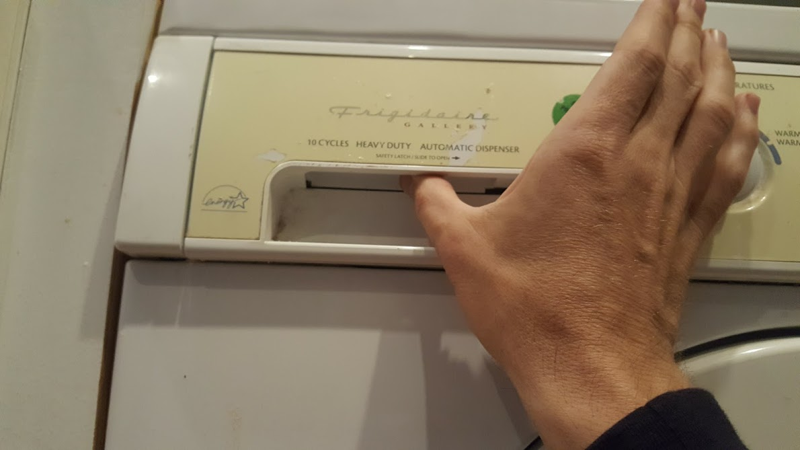
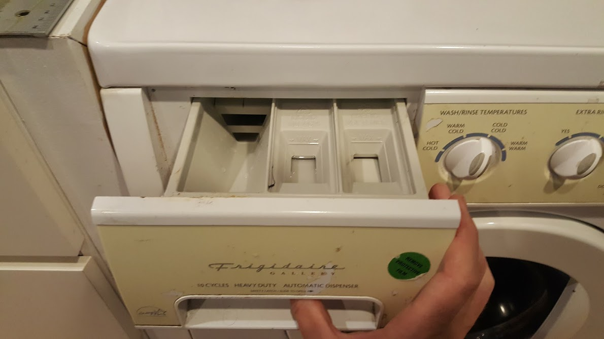
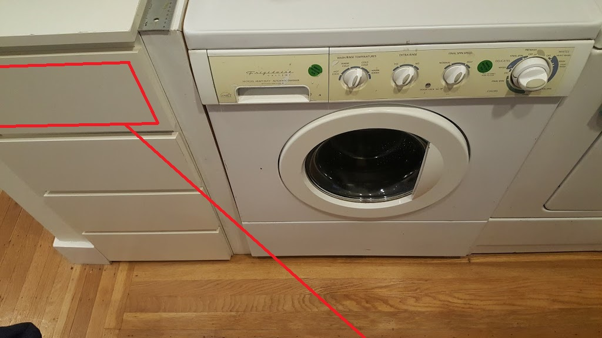
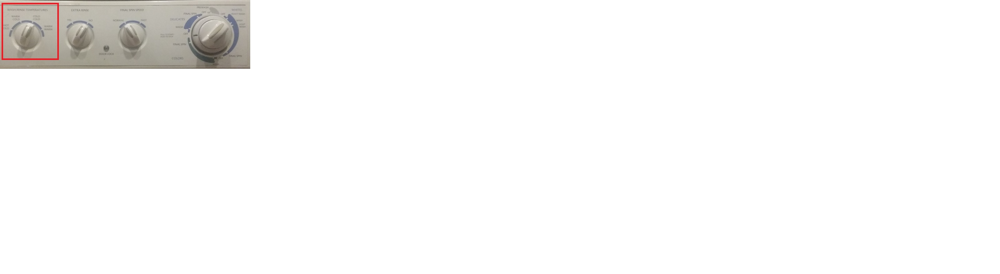
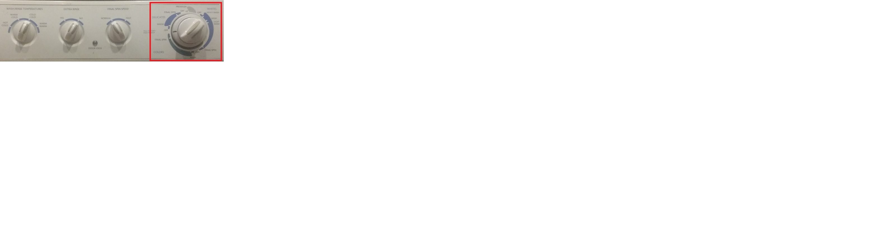

1209 Glen washing machine
1209 Glen washing machine
- Open the soap drawer, pressing the hidden release lever to the right with your finger


- Laundry detergent is in the top drawer to the left of the washing machine

- Shut door firmly or else the machine will not start/li>
- Choose water temperature, cold if you think your colors could run

- Pull out dial
- Choose mode for your clothes (delicate or colors or whites)
- Pull dial out and rotate it to point at the one of the three "wash" settings you prefer. Depress dial to begin the cycle

contact Nelson:
nelson.sproul@gmail.com
(209)677-7685
contact Deirdre:
dvsproul@gmail.com
(415)370-6422
from the City of Berkeley:
short-term rental guest requirements
Home